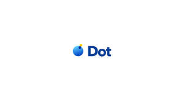

Trade Mark Journal No.2025/050 12 December 2025
UK00004294264 13 November 2025 (9,35,39,42,43)

- Class 9
- Artificial intelligence software for providing travel information and recommendations; artificial intelligence software for providing hotel and accommodation recommendations; artificial intelligence software for comparing hotels and accommodation for travel; artificial intelligence software for creating travel itineraries; artificial intelligence software for providing car rental information and recommendations; downloadable software for accessing digital content in the fields of travel, hotels, and other accommodations; downloadable software used for accessing a website where users can review and post ratings, reviews and recommendations on hotels and other accommodations; downloadable software used for providing travel information and for booking and checking travel reservations; downloadable software used for searching and comparing rates for hotels and other accommodations.
- Class 35
- Advertising the services of others via online searchable guides, listings and directories featuring travel experiences, travel destinations, hotels and other temporary accommodations, restaurants, bars, car rentals, transportation services, tours, activities, attractions and other business organizations and service providers in the travel and hospitality industry for commercial purposes including those provided through artificial intelligence-powered platforms; marketing and promoting the goods and services of others through the preparation and placement of business listings, search engine results and by providing hypertext links to the websites of others; providing searchable online guides and listings for sales purposes; processing orders and sales orders; data processing; compilation and systemisation of information into computer databases structured and optimised by artificial intelligence algorithms; database management; provision of business information online from a computer database or the internet, powered by artificial intelligence; commercial information agencies providing business information, including marketing or demographic data; online ordering services; procurement services; providing interactive websites and databases featuring user ratings, reviews, referrals, comments and recommendations; price analysis and comparison services using artificial intelligence-driven analytics; providing, organization, management and administration of consumer loyalty programs to promote travel services, hospitality services, transportation services and retail services of others; organization, management and administration of consumer loyalty programs to promote travel services, hospitality services, transportation services and retail services of others optimised by artificial intelligence software; providing user reviews for commercial and advertising purposes; the aforementioned services all in relation to the travel and hospitality industry and being provided via an online platform, portal or other global computer network, including artificial intelligence powered systems.
- Class 39
- Trip, travel and transportation information, advice, search and reservation services; providing a searchable databases and listings featuring information on travel experiences, travel destinations, transportation and travel related services and topics; search and reservation services for travel and transport, flights, car rental, tours, taxi rides and airport transfers; providing information and links to website of others featuring travel information and services, geographic information, map images and trip routing; ticket reservation services (travel and transport); providing travel information, namely reviews, ratings, comments and recommendations of travel service providers, tours, local attractions (sightseeing services), the rental of vehicles, transportation, including flights, car rentals, transfer and taxi; the aforementioned services being provided via an online platform, portal or other global computer network; all of the aforesaid services provided via an online platform, portal or other global computer network, incorporating artificial intelligence-based search tools to assist users in planning and managing travel and accommodation.
- Class 42
- Computer services, namely operating and providing online web facilities for others for making travel, hospitality, transportation, entertainment, taking out insurances, cultural and sports related reservations, including via platforms powered by artificial intelligence; providing online search engines to locate and compare prices, ratings, referrals, comments and reviews on travel, hospitality, transportation, entertainment, cultural and sports related services, featuring artificial intelligence-based recommendation systems; providing an online platform for others in the field of locating, describing, providing availability, pricing of hotels and other temporary accommodations, bars, restaurants, car rentals, transportation services, tours, activities, attractions and other services provided in the travel and hospitality industry; all of the aforesaid services optimized and driven by artificial intelligence software; providing a website or online platform where users can post and view ratings, reviews and recommendations on travel, hospitality, transportation, entertainment, cultural and sports related services; providing online web facilities for making and processing payment transactions; providing non-downloadable artificial intelligence software; providing non-downloadable artificial intelligence software for providing travel information and recommendations; providing non-downloadable artificial intelligence software for providing hotel and accommodation recommendations; providing non-downloadable artificial intelligence software for comparing hotels and accommodation for travel; providing non-downloadable artificial intelligence software for creating travel itineraries; providing non-downloadable artificial intelligence software for providing car rental information and recommendations.
- Class 43
- Reservation, information and search services for hotels and other temporary accommodation, bars, restaurants and meals; providing searchable computer databases and listings featuring information on hotels and other temporary accommodation, bars, restaurants and meals; providing information and links to website of others featuring temporary accommodations, bars and restaurants facilitated by artificial intelligence-based search and filtering tools; providing user reviews, ratings, comments and recommendations of temporary accommodations, bars and restaurants; consultation services in the field of accommodation reservation services; providing user reviews, ratings, comments and recommendations in the field of hotels and other temporary accommodation, optimized by artificial intelligence software; all of the aforesaid services provided via an online platform, portal, mobile application or other global computer network powered by artificial intelligence.
Booking.com B.V.
Representative: Stobbs